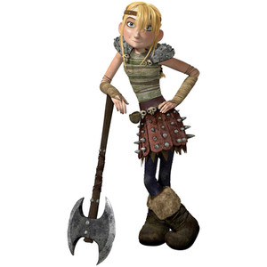

Hiccup Haddok is the son of the chife Stoick the Vast he is not as big as the rest of the teen vikkings and is classafied as the acsedent waiting to happen.

Toothless a NightFury shot down by Hiccup and has lost a tail wing. Toothless becomes Hiccups friend and gets a hand made tail.Toothless is a strike class dragon.
Astrid Hoferson is a determaned vikking with a axe in hand and a bad attertued you dont want to get on her bad side but she dose have a soft side espesholy for hiccup oo
Stormfly a DeadlyNadder is a loyal dragon to Astrid she was a dragon that te teen's where training on but after that Hiccup help Astrid and Stormfly to be the best of friends.StormFly is a sharp class dragon.
The twins Ruffnut and Tuffnut Thorston are the troubelsome two with minds for destrution and a hands for destrution you cant comtrol these two even the best vikkings have tryed to tame them it cant be done yet. Ruffnut is the girl and tuffnut is the boy.
Barf and Belch practily the twins but in dragon form both drstuctive and dangerous just like the twins.Barf and Belch is a fear class and a mystery class dragon.
Snotlout Jorgenson the most self sentered, big ego of all vikkings but arent all the jorgensons ?. (he secretly or not so secretly has a crush a mega crush on Astrid untill httyd 2 then he has a crush on ruffnut!).
HookFang is a MonstrousNightmare who has a bad and big ego just like his ridder. Him and his ridder snotlout dont get along as good as the others but they are friends none the less. HookFang